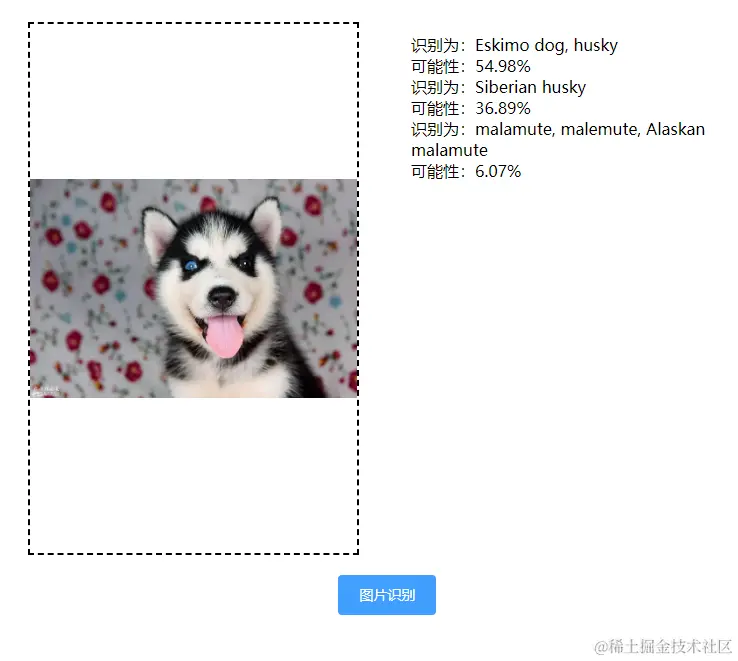
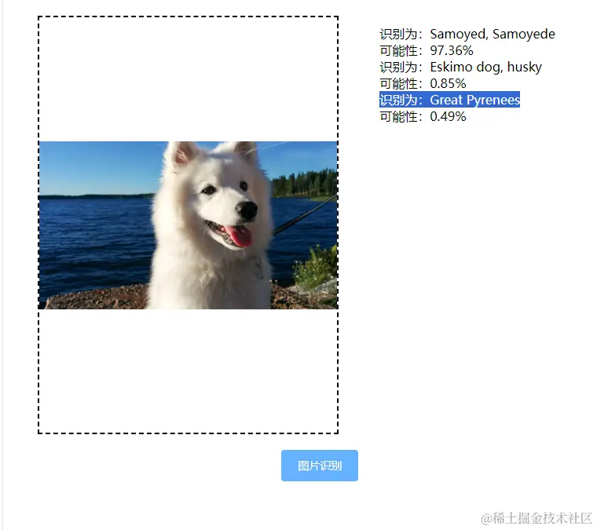
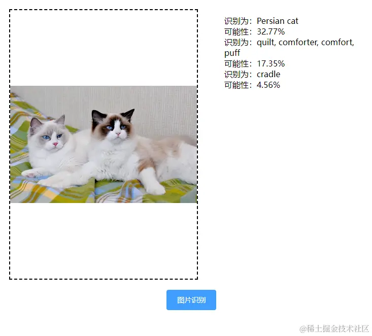

预训练模型是预先在大量数据上进行训练得到的机器学习模型，这些模型可以直接使用或经过微调后用于特定的任务。
一种流行的图像分类模型称为 MobileNet，可作为带有 Tensorflow.js 的预训练模型使用。
我们先在项目中引入 tensorflow.js 和预训练模型 mobilenet
npm install @tensorflow/tfjs
npm install @tensorflow-models/mobilenet
import * as mobilenet from '@tensorflow-models/mobilenet' #导入模块
项目核心代码是
async beginClassify () {
const img = document.getElementById('img') // 获取上传的图片
const model = await mobilenet.load(); // 加载预训练模型
const predictions = await model.classify(img); // 将图片传入预训练模型，并返回预测结果
console.log('Predictions: ', predictions);
this.prediction = predictions
}
注意：如果你想看看 MobileNet 模型还能分类什么，你可以在 Github 上找到可用的不同类的列表。
预测西伯利亚雪橇犬的概率为 36%，预测阿拉斯加雪橇犬的概率为 6%，预测蛮成功的

预训练模型 mobilenet 返回了三个结果和各个结果的概率，从上图看到他预测为哈士奇的概率为 54%，
再试一个
预测萨摩耶的概率为 97%，预测阿拉斯加雪橇犬的概率为 6%，可以看到非常准确

预测波斯猫的概率为 32%
